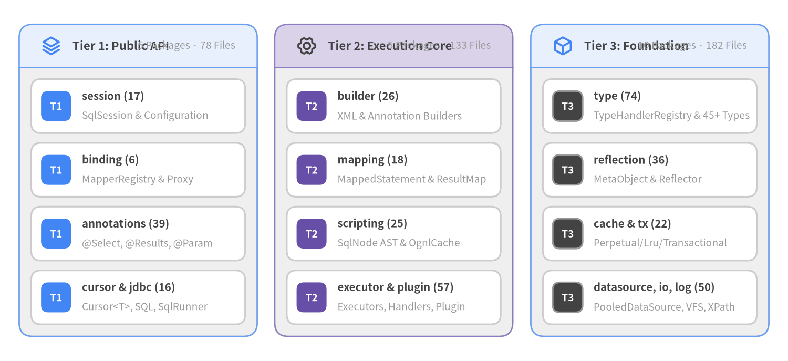
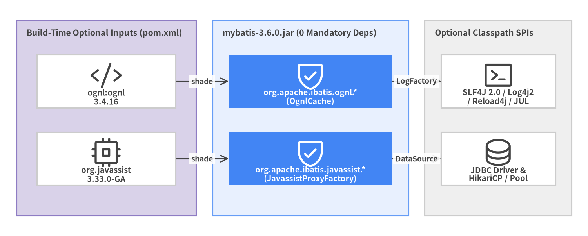

1. 3-Tier Package Topology & Shading
MyBatis 3 (v3.6.0) contains 393 Java source files (23,364 LOC, 374 classes, 2,721 methods) across 20 packages under src/main/java/org/apache/ibatis/. Every package includes a package-info.java descriptor (20/20), and the artifact exports Automatic-Module-Name: org.mybatis alongside OSGi bundle headers (org.apache.ibatis.*;version=${project.version};-noimport:=true).

Source Code
from drawlib.canvas import save, setup
from drawlib.icons import phosphor
from drawlib.smartarts import CardList, Panel
from drawlib.styles import Colors, Styles
setup(width=144, height=66, dpi=150)
white_card = Styles.Neutral.patch(shape_fill_color=Colors.White)
t1_panel = Panel(
"Tier 1: Public API",
"5 Packages · 78 Files",
style=Styles.Neutral,
header_style=Styles.PrimaryNeutral.patch(shape_line_width=1.2),
text_style=Styles.DarkBold.patch(text_size=10.5),
description_style=Styles.Muted.patch(text_size=9.2),
icon=phosphor.stack,
icon_style=Styles.PrimaryBold,
header_variant="filled",
header_height=7.8,
)
t1_panel.draw((3.5, 4.5), width=43.5, height=57.0, align="bottom_left")
xy1, w1, h1 = t1_panel.get_content_box((3.5, 4.5), width=43.5, height=57.0, padding=(2.2, 2.2), align="bottom_left")
c1 = CardList(
style=white_card,
text_style=Styles.DarkBold.patch(text_size=9.8),
description_style=Styles.Muted.patch(text_size=9.2),
badge_shape="rounded_rect",
badge_style=Styles.PrimaryFlat,
badge_text_style=Styles.WhiteBold.patch(text_size=9.2),
direction="vertical",
spacing=1.8,
)
c1.add("session (17)", "SqlSession & Configuration", badge_text="T1")
c1.add("binding (6)", "MapperRegistry & Proxy", badge_text="T1")
c1.add("annotations (39)", "@Select, @Results, @Param", badge_text="T1")
c1.add("cursor & jdbc (16)", "Cursor<T>, SQL, SqlRunner", badge_text="T1")
c1.draw(xy1, width=w1, height=h1, align="bottom_left")
t2_panel = Panel(
"Tier 2: Execution Core",
"5 Packages · 133 Files",
style=Styles.Neutral,
header_style=Styles.SecondaryNeutral.patch(shape_line_width=1.2),
text_style=Styles.DarkBold.patch(text_size=10.5),
description_style=Styles.Muted.patch(text_size=9.2),
icon=phosphor.gear_six,
icon_style=Styles.DarkBold,
header_variant="filled",
header_height=7.8,
)
t2_panel.draw((50.2, 4.5), width=43.5, height=57.0, align="bottom_left")
xy2, w2, h2 = t2_panel.get_content_box((50.2, 4.5), width=43.5, height=57.0, padding=(2.2, 2.2), align="bottom_left")
c2 = CardList(
style=white_card,
text_style=Styles.DarkBold.patch(text_size=9.8),
description_style=Styles.Muted.patch(text_size=9.2),
badge_shape="rounded_rect",
badge_style=Styles.SecondaryFlat,
badge_text_style=Styles.WhiteBold.patch(text_size=9.2),
direction="vertical",
spacing=1.8,
)
c2.add("builder (26)", "XML & Annotation Builders", badge_text="T2")
c2.add("mapping (18)", "MappedStatement & ResultMap", badge_text="T2")
c2.add("scripting (25)", "SqlNode AST & OgnlCache", badge_text="T2")
c2.add("executor & plugin (57)", "Executors, Handlers, Plugin", badge_text="T2")
c2.draw(xy2, width=w2, height=h2, align="bottom_left")
t3_panel = Panel(
"Tier 3: Foundation",
"10 Packages · 182 Files",
style=Styles.Neutral,
header_style=Styles.PrimaryNeutral.patch(shape_line_width=1.2),
text_style=Styles.DarkBold.patch(text_size=10.5),
description_style=Styles.Muted.patch(text_size=9.2),
icon=phosphor.cube,
icon_style=Styles.PrimaryBold,
header_variant="filled",
header_height=7.8,
)
t3_panel.draw((97.0, 4.5), width=43.5, height=57.0, align="bottom_left")
xy3, w3, h3 = t3_panel.get_content_box((97.0, 4.5), width=43.5, height=57.0, padding=(2.2, 2.2), align="bottom_left")
c3 = CardList(
style=white_card,
text_style=Styles.DarkBold.patch(text_size=9.8),
description_style=Styles.Muted.patch(text_size=9.2),
badge_shape="rounded_rect",
badge_style=Styles.Dark,
badge_text_style=Styles.WhiteBold.patch(text_size=9.2),
direction="vertical",
spacing=1.8,
)
c3.add("type (74)", "TypeHandlerRegistry & 45+ Types", badge_text="T3")
c3.add("reflection (36)", "MetaObject & Reflector", badge_text="T3")
c3.add("cache & tx (22)", "Perpetual/Lru/Transactional", badge_text="T3")
c3.add("datasource, io, log (50)", "PooledDataSource, VFS, XPath", badge_text="T3")
c3.draw(xy3, width=w3, height=h3, align="bottom_left")
save()
Complete 20-Package Inventory (org.apache.ibatis.*)
| Package | Tier | Source Files | Primary Classes & Architectural Role |
|---|---|---|---|
org.apache.ibatis.session |
Tier 1 | 17 |
SqlSessionFactoryBuilder, SqlSessionFactory, SqlSession, Configuration, RowBounds, ResultHandler, SqlSessionManager |
org.apache.ibatis.binding |
Tier 1 | 6 |
MapperRegistry, MapperProxyFactory<T>, MapperProxy<T>, MapperMethod, BindingException |
org.apache.ibatis.annotations |
Tier 1 | 39 |
@Select, @Insert, @Update, @Delete, @Results, @Result, @One, @Many, @Param, @Options, @CacheNamespace |
org.apache.ibatis.cursor |
Tier 1 | 3 |
Cursor<T>, DefaultCursor<T> streaming iterator over open JDBC ResultSet |
org.apache.ibatis.jdbc |
Tier 1 | 13 |
SQL, AbstractSQL<T>, SqlRunner, ScriptRunner, SelectBuilder |
org.apache.ibatis.builder |
Tier 2 | 26 |
BaseBuilder, MapperBuilderAssistant, SqlSourceBuilder, XMLConfigBuilder, XMLMapperBuilder, XMLStatementBuilder, MapperAnnotationBuilder |
org.apache.ibatis.mapping |
Tier 2 | 18 |
MappedStatement, BoundSql, ParameterMapping, ResultMap, ResultMapping, Discriminator, SqlSource, Environment, CacheBuilder |
org.apache.ibatis.scripting |
Tier 2 | 25 |
LanguageDriver, XMLLanguageDriver, RawSqlSource, DynamicSqlSource, SqlNode hierarchy (IfSqlNode, ForEachSqlNode, TrimSqlNode), OgnlCache, DefaultParameterHandler |
org.apache.ibatis.executor |
Tier 2 | 50 |
Executor, BaseExecutor, SimpleExecutor, ReuseExecutor, BatchExecutor, CachingExecutor, StatementHandler, ResultSetHandler, KeyGenerator, ProxyFactory |
org.apache.ibatis.plugin |
Tier 2 | 7 |
Interceptor, InterceptorChain, Invocation, Plugin, @Intercepts, @Signature |
org.apache.ibatis.type |
Tier 3 | 74 |
TypeHandler<T>, BaseTypeHandler<T>, TypeHandlerRegistry, TypeAliasRegistry, JdbcType, and 45+ built-in JDBC handlers |
org.apache.ibatis.reflection |
Tier 3 | 36 |
MetaObject, MetaClass, Reflector, DefaultReflectorFactory, ObjectFactory, ObjectWrapper, PropertyTokenizer, TypeParameterResolver |
org.apache.ibatis.cache |
Tier 3 | 15 |
Cache, CacheKey, PerpetualCache, TransactionalCacheManager, and 9 decorator caches (LruCache, FifoCache, SoftCache, WeakCache, SerializedCache, SynchronizedCache, LoggingCache, BlockingCache, ScheduledCache) |
org.apache.ibatis.datasource |
Tier 3 | 15 |
DataSourceFactory, UnpooledDataSource, PooledDataSource, PooledConnection, PoolState, JndiDataSourceFactory |
org.apache.ibatis.transaction |
Tier 3 | 7 |
Transaction, TransactionFactory, JdbcTransaction, ManagedTransaction |
org.apache.ibatis.parsing |
Tier 3 | 6 |
XPathParser, XNode, GenericTokenParser, PropertyParser, TokenHandler |
org.apache.ibatis.io |
Tier 3 | 9 |
Resources, ClassLoaderWrapper, ResolverUtil<T>, VFS, DefaultVFS, JBoss6VFS, SerialFilterChecker |
org.apache.ibatis.logging |
Tier 3 | 22 |
Log, LogFactory, ConnectionLogger, PreparedStatementLogger, ResultSetLogger, and SLF4J/Log4j2/JUL/Commons/StdOut adapters |
org.apache.ibatis.exceptions |
Tier 3 | 4 |
PersistenceException, IbatisException, TooManyResultsException, ExceptionFactory |
org.apache.ibatis.lang |
Tier 3 | 2 |
@UsesJava7, @UsesJava8 internal compatibility markers |
Zero-Dependency Shading & Optional SPI Packaging
A defining architectural property of org.mybatis:mybatis (pom.xml:115-134, 287-310, 365-411) is that every compile-scope dependency in pom.xml is marked <optional>true</optional>. During the package lifecycle phase, maven-shade-plugin (v3.6.2) embeds and relocates the two internal bytecode/expression libraries directly into the org.apache.ibatis.* namespace so downstream applications never experience version collisions:

Source Code
from drawlib.canvas import save, setup
from drawlib.diagrams.architecture import ArchitectureDiagram, Node, NodeGroup, PhosphorIcon
from drawlib.styles import Colors, Styles
setup(width=144, height=58, dpi=150)
d = ArchitectureDiagram(
node_style=Styles.Dark,
node_text_style=Styles.DarkBold.patch(text_size=9.8),
edge_style=Styles.Dark.patch(line_width=1.5),
edge_text_style=Styles.DarkBold.patch(text_size=9.2),
node_card_style=Styles.Neutral.patch(shape_fill_color=Colors.White),
)
up = d.add(
NodeGroup(
"Build-Time Optional Inputs (pom.xml)",
width=44,
height=48,
style=Styles.SecondaryNeutral,
text_style=Styles.DarkBold.patch(text_size=10.2, halign="left", valign="top"),
),
xy=(4, 5),
)
n_ognl = up.add(Node("ognl:ognl\n3.4.16", icon=PhosphorIcon.CODE, width=34, height=13), xy=(22, 33))
n_jav = up.add(Node("org.javassist\n3.33.0-GA", icon=PhosphorIcon.CPU, width=34, height=13), xy=(22, 14))
jar = d.add(
NodeGroup(
"mybatis-3.6.0.jar (0 Mandatory Deps)",
width=48,
height=48,
style=Styles.PrimaryNeutral,
text_style=Styles.DarkBold.patch(text_size=10.2, halign="left", valign="top"),
),
xy=(52, 5),
)
n_s_ognl = jar.add(
Node(
"org.apache.ibatis.ognl.*\n(OgnlCache)",
icon=PhosphorIcon.SHIELD_CHECK,
width=40,
height=13,
style=Styles.White,
text_style=Styles.WhiteBold.patch(text_size=9.6),
card_style=Styles.PrimaryFlat,
),
xy=(24, 33),
)
n_s_jav = jar.add(
Node(
"org.apache.ibatis.javassist.*\n(JavassistProxyFactory)",
icon=PhosphorIcon.SHIELD_CHECK,
width=40,
height=13,
style=Styles.White,
text_style=Styles.WhiteBold.patch(text_size=9.6),
card_style=Styles.PrimaryFlat,
),
xy=(24, 14),
)
spi = d.add(
NodeGroup(
"Optional Classpath SPIs",
width=36,
height=48,
style=Styles.Neutral,
text_style=Styles.DarkBold.patch(text_size=10.2, halign="left", valign="top"),
),
xy=(104, 5),
)
n_log = spi.add(Node("SLF4J 2.0 / Log4j2\n/ Reload4j / JUL", icon=PhosphorIcon.TERMINAL_WINDOW, width=28, height=13), xy=(18, 33))
n_drv = spi.add(Node("JDBC Driver &\nHikariCP / Pool", icon=PhosphorIcon.DATABASE, width=28, height=13), xy=(18, 14))
n_ognl.connect(n_s_ognl, label="shade")
n_jav.connect(n_s_jav, label="shade")
n_s_ognl.connect(n_log, label="LogFactory")
n_s_jav.connect(n_drv, label="DataSource")
d.draw(xy=(0, 0))
save()